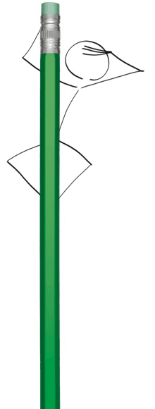

Pro region

Program Pro region v sobě spojuje předchozí programy Pro zdraví, Pro budoucnost a Pro radost. Žadatelé tak budou moci předložit záměry a získat tak finanční podporu. Bude brán zřetel především na dopad projektu pro cílovou skupinu ve vybraných obcích Moravskoslezského kraje.
Podporované města a obce: Albrechtice, Dětmarovice, Doubrava, Frýdek-Místek, Havířov, Horní Suchá, Karviná, Orlová, Paskov, Petřvald, Staříč, Stonava, Sviadnov a Žabeň.
Podporované oblasti:
- Volnočasové aktivity (primární zaměření na seniory, děti a mládež a mezigenerační aktivity);
- Zlepšení životních podmínek sociálně ohrožených skupin obyvatelstva včetně aktivit zaměřených na odstraňování sociálního vyloučení;
- Pracovní a sociální terapie zdravotně postižených;
- Zlepšení vybavenosti zařízení sociální péče;
- Pracovní rehabilitace;
- Podporované zaměstnávání;
- Zlepšení stavu životního prostředí a zachování biodiverzity;
- Obnova hodnotných lokalit přírodního významu a jejich prezentace;
- Rozvoj komunitně zaměřených aktivit, např. úprava veřejných prostranství, komunitní akce v obci nebo městě
Výsledky výzvy Pro region 2026 ZDE!